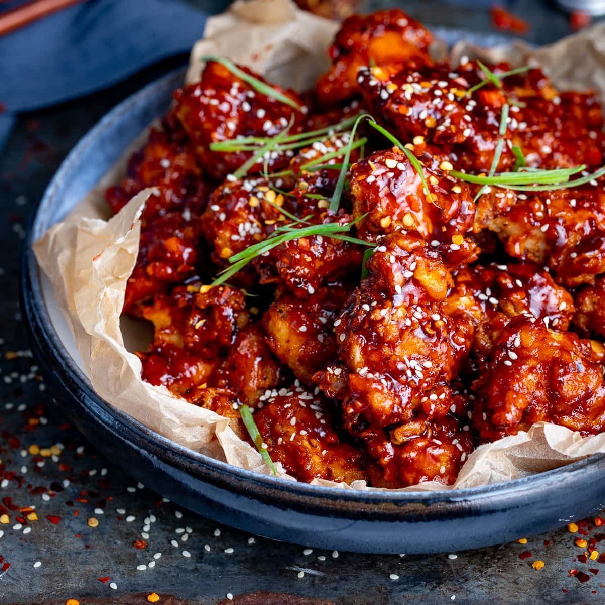

Home
Korean Fried Chicken Recipe

Double fried to crispy perfection, this saucy Korean fried chicken recipe is sweet and comes with a gochujang kick. This recipe is specifically the sweet and spicy version, called yangnyeom-chikin, which means seasoned chicken
Ingridients
Marinade
- 1kg chicken breast
- 1 tsp salt
- 1 tsp pepper
- 4 tbsp garlic powder
- 3 tbsp ginger powder
- 6 tbsp onion powder
- 25ml water
- 2 tbsp white vinegar
Dry batter & frying
- cooking oil
- 100g potato starch
- 50g all purpose flour
- 2 tsp salt
Sauce
- 4 tsp sesame oil
- 4 cloves minced garlic
- 1 tbsp gojuchang
- 1 tsp honey
- 1 tsp ketchup
- 1 tsp soy sauce
Steps
Marinade
- Prep your chicken by deboning chicken thighs or cutting the wings in half so that the wing and drumsticks are two separate pieces (this will help with frying and eating).
- If you are using chicken thighs, cut them into 1,5 to 2 inch pieces. I like to make sure each piece has skin.
- In a bowl, combine the salt, pepper, garlic powder, ginger powder, and onion powder. Use a fork or whisk to mix dry ingredients thoroughly. Add the water and vinegar into the bowl and whisk until all the ingredients are combined. Your marinade should be on the thicker end, similar to applesauce. If you need more water, add one tablespoon at a time.
- In an air-tight container, add the chicken pieces and pour the wet marinade on top. Make sure each piece is thoroughly coated. Leave it in the fridge to marinade at least 12 hours and up to 18 hours.
Dry batter & frying
- Remove the marinated chicken from the fridge about 30 minutes before frying so it comes to room temp. If you fry them straight from the fridge, there is a possibility the centers will be raw when the outside is properly cooked.
- In a heavy-bottomed pot, add about two inches of vegetable oil and heat it to 375 F.
- In a shallow bowl, combine the potato starch, all purpose flour, and salt.
- Take one piece of chicken, remove excess marinade, and coat it with the dry batter thoroughly, pat excess powder off, and place on a drying rack over a half sheet pan. Repeat with all the pieces of chicken.
- Before frying, make sure the oil reads 375 F (repeat this when you are doing new batches too). Using tongs, carefully lower the pieces of chicken into the oil, but do not crowd the pot. Fry each batch for about two to four minutes depending on the size of the chicken. Turn over the chicken every so often so both sides brown. Use a thermometer to check the temperature chicken should be at 165 F. The outside should be light brown. Remove the chicken and lay flat on a paper towel lined wire rack. Repeat with the rest of the chicken pieces.
- Second fry: once all chicken pieces are fried, fish out any charred or browned pieces at the bottom of your pot (I like to use a small strainer to fish these items out). In small batches double fry the chicken again by placing them back into the oil and cooking for another two to three minutes or until the outer layer is very crispy and medium to dark golden brown. Remove the chicken and dry them on paper towels over wire racks.
Sauce
- Add sesame oil in a saucepan over medium heat, and add the garlic. Once the garlic is fragrant (about 30 seconds), lower to medium-low heat and add the gojuchang, honey, ketchup, and soy sauce. Stir the sauce and cook for about one minute to warm it up. You dont want to boil this sauce just to simmer slightly and warm it up for the chicken.
- In a large mixing bowl, add the chicken and pour about half the sauce to start. Mix the chicken and sauce until its coated, adding additional sauce if necessary.
- Serve your chicken with daikon radish pickles, french fries, and an ice cold beer.